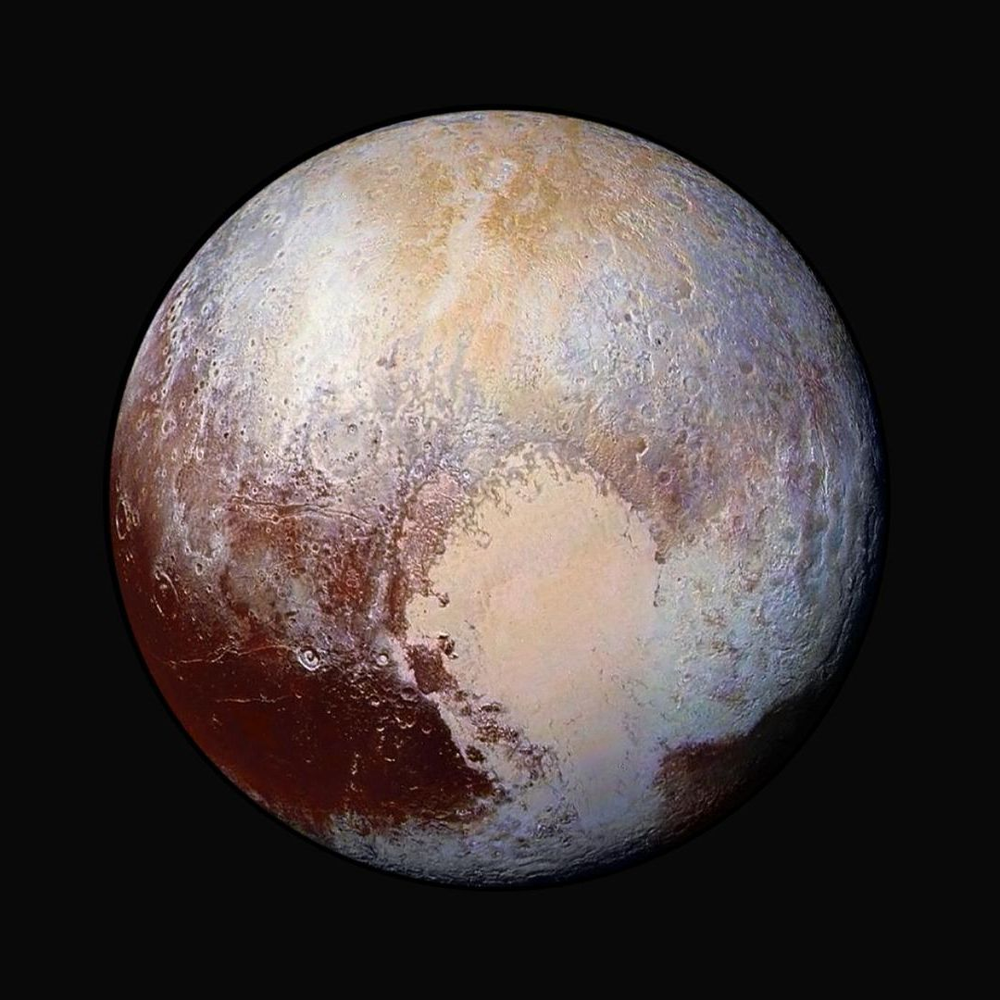

Solar System
Hyy my name is amna noor. I like studying about solar system.

Sun

The Sun is the yellow dwarf star at the center of our solar system, containing more than 99% of the system's total mass and holding all planets, comets, and asteroids in orbit.
1. Mercury

Mercury is the smallest planet in our solar system and the closest one to the Sun.
2. Venus

Venus is the second planet from the Sun and is often called Earth’s "twin" or "sister" because of its similar size, mass, and rocky structure, though its surface conditions are intensely hot and toxic.
3. Earth

Earth is our home planet and the third planet from the Sun. It is the only place in space known to have life.
4. Mars

Mars is the fourth planet from the Sun and the second smallest planet in our solar system, famous for its distinct rusty-red color.
5. Jupiter

Jupiter is the largest planet in our solar system and the fifth planet from the Sun.
6. Saturn

Saturn is the sixth planet from the Sun and the second-largest planet in our solar system.
7. Uranus

Uranus is the seventh planet from the Sun and an ice giant with a pale blue-green color caused by methane gas in its atmosphere.
8. Neptune

Neptune is the eighth and farthest known planet from the Sun in our Solar System.
9. Pluto

Pluto is a small, icy dwarf planet located in the Kuiper Belt, a distant region of our solar system past Neptune.